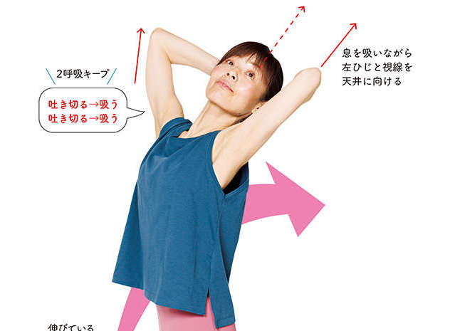
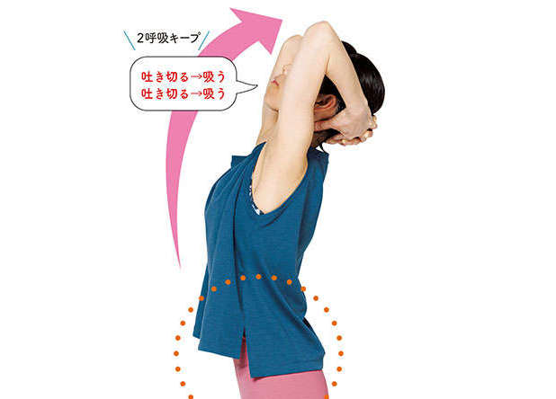
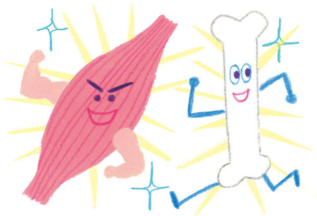
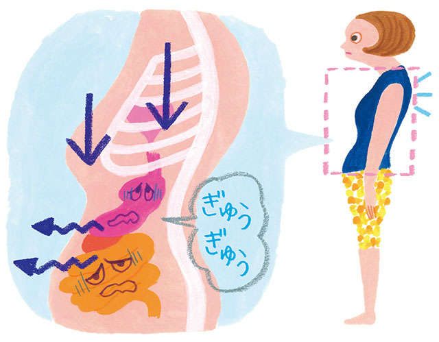
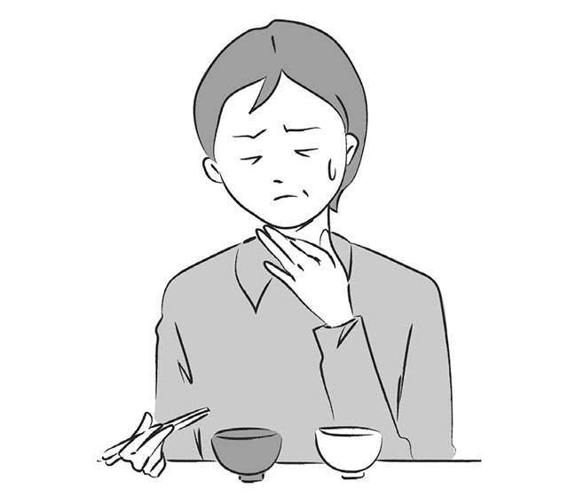
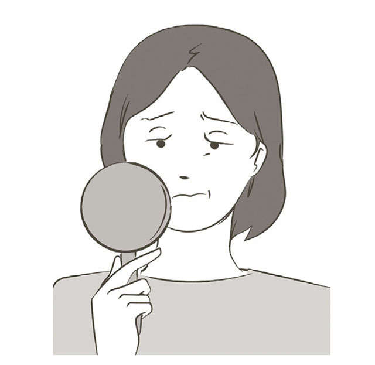
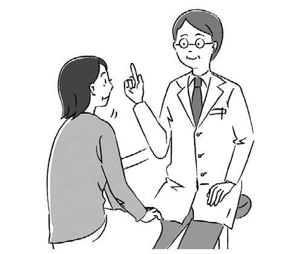
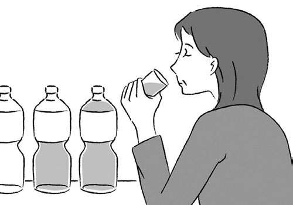

含有“原因”关键词的文章
1-

低压扰乱自主神经，浑身不舒服…… 发布日期：“只要刮胡子”，即使在炎热的日子里也没关系！简单运动消除胃胀【物理疗法...
-

低压扰乱自主神经，浑身不舒服…… 发布日期：对于那些说“天气热不想运动...”的人来说没关系，我有一个“圆滚滚的肚子”...
-
低压扰乱自主神经，浑身不舒服…… 发布日期：
比传统的仰卧起坐练习更有效。由瑜伽教练创建，帮助您感觉胃部清爽......
-
低压扰乱自主神经，浑身不舒服…… 发布日期：
“Nagayam 配方”可增加活力荷尔蒙 DHEA。如果你不需要的话也没关系，所以马上...
-
低压扰乱自主神经，浑身不舒服…… 发布日期：
增加青春荷尔蒙DHEA，消除“小胖肚”！ “长岛”“佐藤……”
-
低压扰乱自主神经，浑身不舒服…… 发布日期：
吃长山药增强免疫力！ 「Tororo」增加回春荷尔蒙「DHEA」...
-

低压扰乱自主神经，浑身不舒服…… 发布日期：即使不饿也不要因为到了吃饭的时间就吃饭！医生教的“Pokko”...
-

低压扰乱自主神经，浑身不舒服…… 发布日期：我的内脏都碎了！医生教你肚子鼓起来的惊人风险
-

低压扰乱自主神经，浑身不舒服…… 发布日期：70%以上的患者是中老年女性。 “口干舌燥”自查【专家...
-

低压扰乱自主神经，浑身不舒服…… 发布日期：睁眼困难、视野狭窄……Dr.村上隆治疗上眼睑下垂时的“眼睑下垂”......
-

低压扰乱自主神经，浑身不舒服…… 发布日期：青光眼是一种随着年龄增长而加重的疾病。眼科医生 Masaki Yato 博士解释了原因和治疗方法......
-

低压扰乱自主神经，浑身不舒服…… 发布日期：“夜尿”的原因及对策。泌尿科医生 Masaki Yoshida 解释了如何改善自我护理……